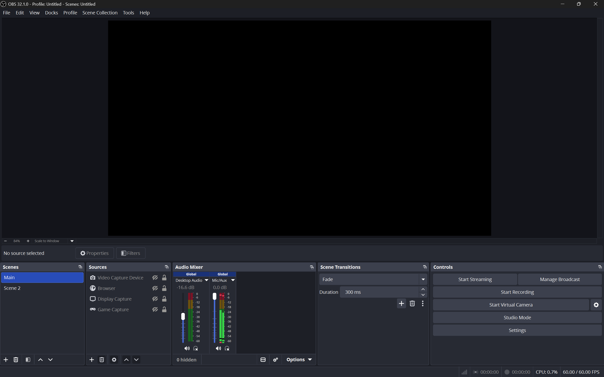
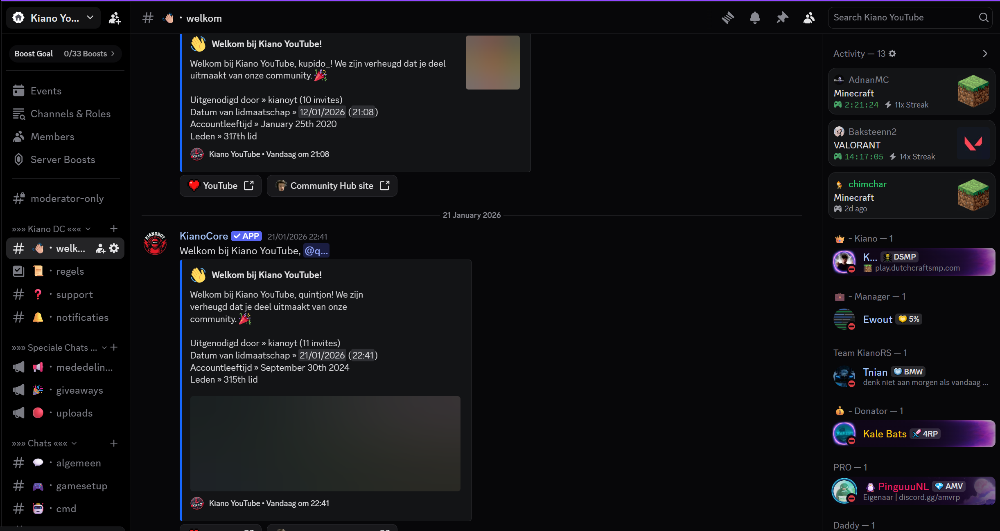

YouTube Kanaal

Over dit project
Mijn YouTube-kanaal @KianoRS is een platform waarop ik Belgische gaming content deel. Met meer dan 3.700 abonnees en honderden video's bied ik gameplay, tutorials en livestreams aan.
De belangrijkste onderdelen van dit project zijn het maken en bewerken van video's, het beheren van een kanaal en community, en het promoten van content via sociale media. Het kanaal focust op Minecraft, andere games en educatieve content rondom gaming.
Dit project heeft mij veel geleerd over videoproductie, community management en digitale marketing. Het is een creatieve uitdaging die technische en organisatorische vaardigheden combineert.
Screenshots

